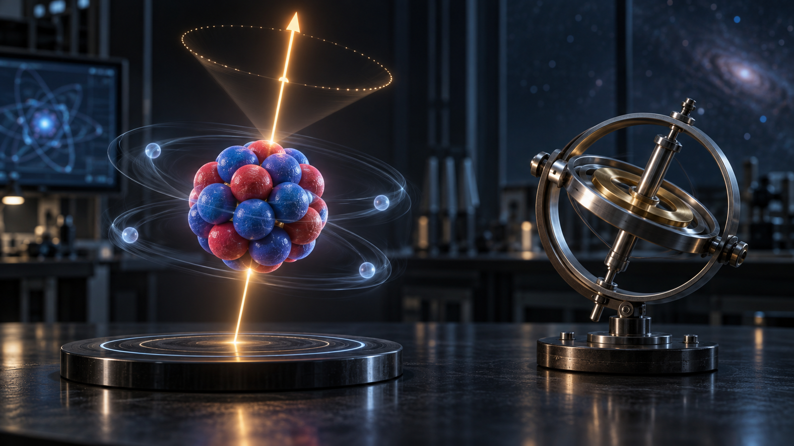
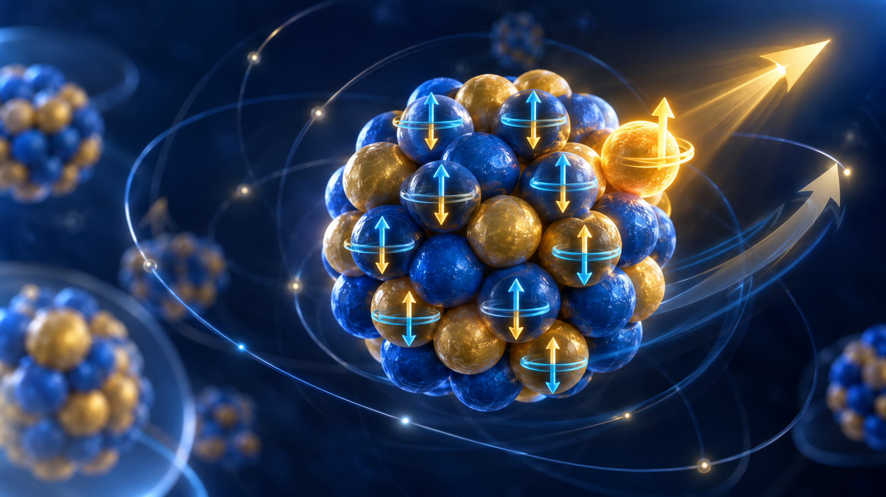
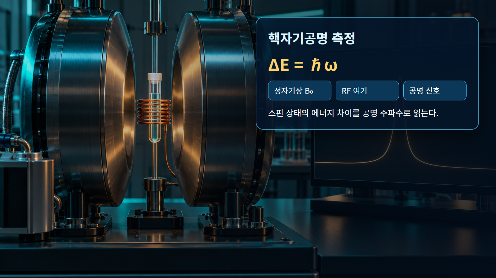

핵물리 기초 · 017
스핀과 각운동량
핵자의 궤도운동과 고유스핀이 결합해 만드는 원자핵의 총각운동량

원자핵의 스핀 I는 핵 전체가 고전 팽이처럼 도는 속도를 뜻하지 않는다. 각 양성자와 중성자는 궤도각운동량 l과 고유스핀 s=1/2를 가지며, 이들이 양자역학적 규칙에 따라 결합한 총각운동량이 핵스핀이다. 측정 가능한 한 성분은 정해진 값으로 양자화된다.
개념 정의
원자핵의 스핀 I는 핵 전체가 고전 팽이처럼 도는 속도를 뜻하지 않는다. 각 양성자와 중성자는 궤도각운동량 l과 고유스핀 s=1/2를 가지며, 이들이 양자역학적 규칙에 따라 결합한 총각운동량이 핵스핀이다. 측정 가능한 한 성분은 정해진 값으로 양자화된다.
이 개념은 하나의 그림이나 비유만으로 고정되지 않는다. 양성자수와 중성자수, 에너지 준위, 계의 경계를 함께 정하고 어떤 관측량을 설명하려는지 먼저 구분해야 한다. 같은 핵에서도 바닥상태와 들뜬상태의 구조가 다를 수 있다.
작동 원리
같은 준위의 핵자 두 개가 시간역전 상태로 짝을 이루면 각운동량이 상쇄되는 경향이 있다. 그래서 짝수 양성자·짝수 중성자 핵의 바닥상태 스핀은 흔히 0이다. 홀질량수 핵에서는 마지막 홀핵자의 j=l±1/2가 전체 스핀과 패리티를 크게 좌우한다.
원리식은 물리적 방향과 크기척도를 제공하지만 실제 핵종의 수치는 질량·준위·반응 자료로 확인한다. 보존법칙을 먼저 적용하고, 모형이 생략한 잔류상호작용과 집단효과가 필요한 정밀도인지 판단한다.

단계별 계산과 상황 예시
예시 1｜l=1인 p궤도 핵자와 s=1/2를 결합하면 j=|l−s|부터 l+s까지이므로 j=1/2 또는 3/2가 가능하다. 같은 p궤도라도 스핀 방향 결합에 따라 두 준위가 갈라지는 스핀-궤도 분할이 생긴다.
예시 2｜짝수-짝수 핵에서 두 핵자가 j와 −j 상태로 짝지으면 합성 각운동량은 0이 될 수 있다. 반대로 홀핵자가 j=5/2 준위에 남아 있으면 단순 껍질모형에서 바닥상태 스핀 후보는 I=5/2다. 실험값은 잔류상호작용으로 달라질 수 있다.
| 구분 | 대표 조건 | 해석 |
|---|---|---|
| 짝수-짝수 핵 | 흔히 I=0 | 각운동량 짝지음 |
| l=1, s=1/2 | j=1/2 또는 3/2 | 벡터결합 |
| 홀핵자 | 총스핀 지배 | 구성혼합 가능 |

원자력공학의 실제 적용
핵스핀과 패리티는 감마전이 선택규칙, 중성자 공명, 핵자기공명과 방사선 검출신호를 해석하는 데 필요하다. 붕괴가 허용되는지 억제되는지, 특정 반응이 어느 준위를 채우는지를 판단할 때 에너지와 함께 반드시 확인한다.
예비평가에서는 대표값으로 경향을 확인하고 상세평가에서는 핵종·에너지·온도에 맞는 평가자료를 사용한다. 결과에는 입력값, 단위, 자료 버전, 중간 계산과 적용범위를 함께 기록한다. 계산과 측정이 다르면 입력자료, 계의 경계, 누락된 상태나 반응경로 순으로 추적한다.
오해와 적용 한계
핵스핀을 핵 표면의 실제 회전 그림으로만 이해하면 양자상태의 중첩과 결합규칙을 놓친다. 홀핵자 하나가 항상 실험 스핀을 완벽히 결정하지도 않는다. 복잡한 핵에서는 구성혼합과 집단회전이 포함되며 값은 분광자료로 검증한다.
이미지는 핵자와 힘을 눈에 보이게 확대한 개념 표현이며 실제 크기·거리·시간 비율이 아니다. 비유가 양자상태를 고전 궤적으로 바꾸지 않도록 주의하고, 정량 결론은 핵종별 실험자료와 불확실성을 포함해 판단한다.
핵심 정리
스핀과 각운동량은 핵의 집단적 경향과 개별 양자상태를 구분해 읽는 출발점이다. 정의와 작동 원리를 확인한 뒤 두 예시처럼 입력·단위·계산·해석을 나누면 공식이 설명하는 범위가 선명해진다. 실제 적용에서는 서로 다른 모형의 강점과 한계를 비교하고 검증된 핵자료로 수치를 보완한다.
검토자는 값이 그럴듯한지만 보지 않고 보존법칙, 차원, 극한조건을 독립적으로 검사한다. 자료가 없는 영역의 보간과 외삽을 구분하며, 불확실성이 설계판단에 미치는 민감도를 함께 제시해야 한다. 서로 다른 모형이 같은 관측량을 설명할 때에는 계산값뿐 아니라 가정, 필요한 입력자료와 적용 가능한 핵종 범위를 같은 표에서 비교한다.